Incubator Belt Tensioning and Inspection
Parts and Materials Required
- Proper PPE
- Fine Point Permanent Marker
- Tape
- 3 mm Ball Hex Key
Time Required
- 45 minutes
Procedure
- Put on proper PPE.
- Unload all MTUs from the Panther System.
- Open the Service Drawer.
 Remove the Mid Bay front panel.
Remove the Mid Bay front panel.
- Using Service Software, initialize the Incubator(s) and allow all to reach thermal equilibrium (15–30 minutes).

Note—Initialization of the Amp Incubator usually results in an error pop-up message, "Initialization: RTF Failure 22 02 02 03 30." This is normal and should be ignored. - Raise the Incubator cover(s) slightly to expose the tensioner pulley screw.

Caution—Do not raise the cover too high or remove the cover completely. this will result in a heating failure: Error 7A. If the error occurs, initialize the Incubator. 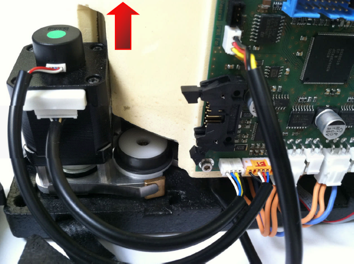
- Press Start for Continuous rotation of the carousel.
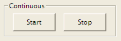
- Using a balled 3 mm hex key, loosen the tensioner pulley until the pulley exhibits movement. As the carousel moves counterclockwise, the tensioner pulley will move inward < 1 mm, but return to a nominal position during the ≈ 1 second waiting period.
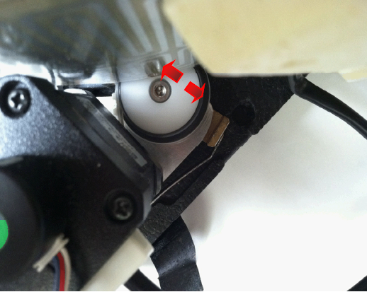
- Allow the assembly to auto-tension. Observe the nominal position of the pulley during the waiting period between the carousel rotations.
- Press Stop and tighten the 3 mm screw.Optional—It may be helpful to trace a reference position of the pulley using a thin permanent marker.
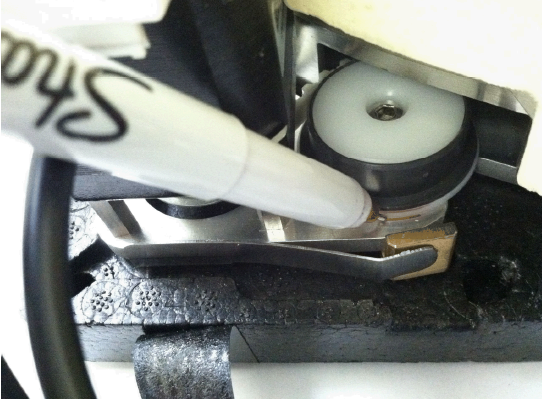
. - Inspect the belt backlash.
- Initialize the Incubator carousel.
- Tape the Incubator door open and raise the Incubator cover by hand to view the carousel movement.
Caution—Do not raise the cover too high or remove the cover completely. this will result in a heating failure: Error 7A. If the error occurs, initialize the Incubator. 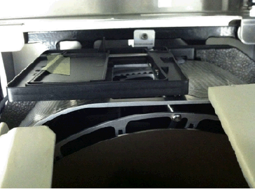
- Using a permanent marker, mark a reference point(s) on the fan baffle to locate a carousel spoke. Apply clockwise and counterclockwise torque onto the carousel slot.
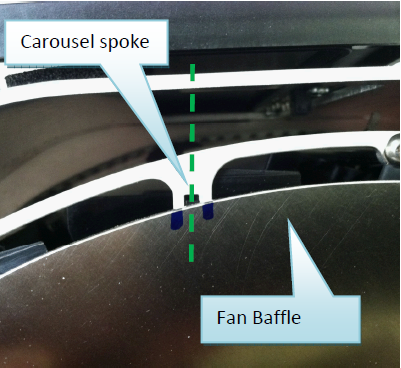
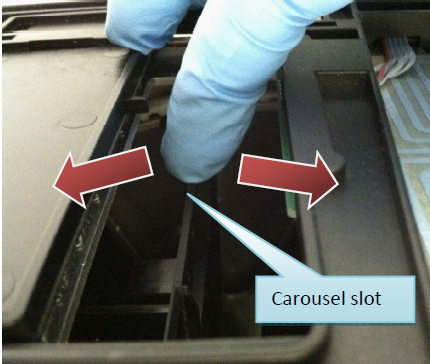
- Do not apply excessive force that will cause motor step losses, but enough force* to see the carousel wiggle left/right. If the total backlash is > 1.5 mm, then the tension is incorrect and the Incubator may experience carousel position errors.
*The force is no more than 2x the force it takes to fully open the Incubator door.
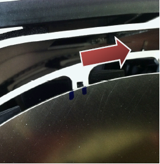
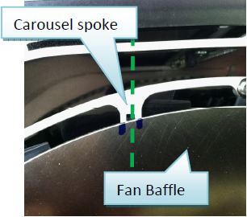
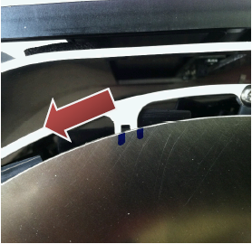
- Alternately, if the slop is > 1.5 mm (knowing that one belt tooth is 2 mm wide), then the tension is incorrect and the Incubator may experience a carousel position error.
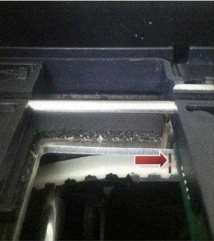
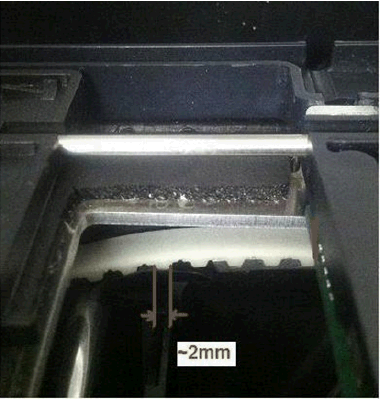
- Remove the tape and press Start for Continuous rotation of the carousel. Allow at least 10 minutes to observe the mechanics of the belt.
Tip—All Incubators can be inspected simultaneously. Press Start to continuously rotate all Incubators, if necessary. Note the following inspection points:
- Belt riding—The belt and/or (grey) pulley bearing should remain centered along pulleys (tensioner and idler). Poor belt positioning can interfere with MTU Multi-tube unit—Container used to process tests in the instrument. An MTU contains five separate reaction tubes. The MTU is moved through the instrument by the linear distributor and includes five tiplets for pipettiing to be used in the mag wash station. placement.
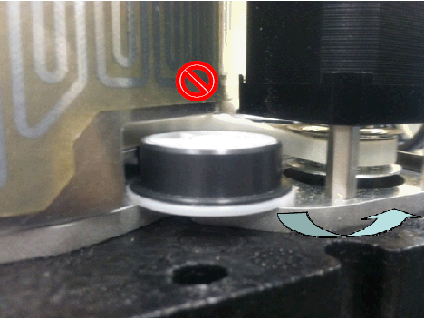
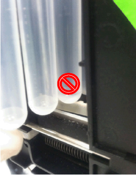
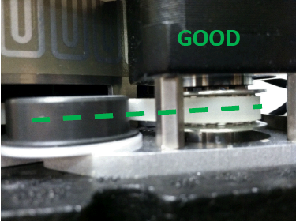
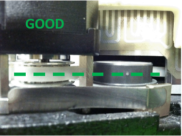
- Proper belt meshing—The belt should engage the carousel with no skipped gear teeth.
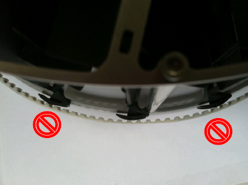
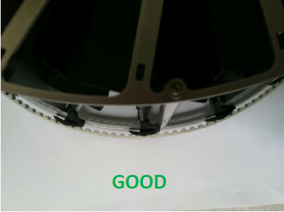
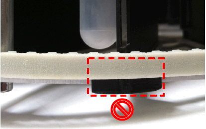
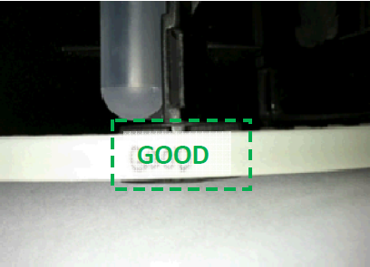
- Pulley seating—The idler and tensioner pulley should lay flat against the baseplate (i.e., no gaps).
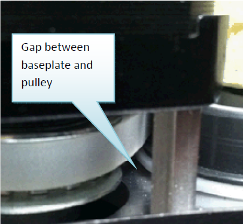
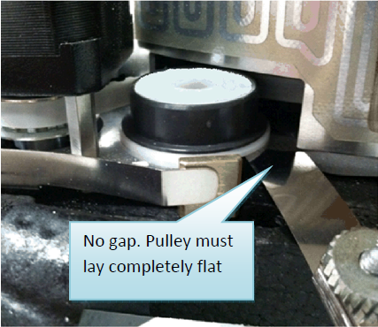
- Pulley bearing lifting—Either pulley bearing (idler or tensioner) can exhibit wandering upward during carousel movement and may indicate: (1) poor pulley seating, (2) over-tensioned belt. Proceed if items (1) and (2) are inspected to be good.
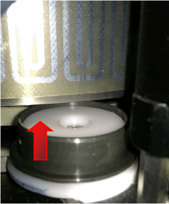
Verification
Continuous Carousel Rotation Verification
- In Service Software, Initialize the Incubator
- Press Start for Continuous rotation and allow the rotation to continue for a random duration of 5–15 seconds. Repeat 5 times.
This combination ensures that the carousel is electromechanically sound and has no backlash problems.
Tip—All Incubators can be inspected simultaneously. Press Start to continuously rotate all Incubators, if necessary. - Beware of the following fatal error message that occurs early in the rotation (≈ 2 seconds after starting):
2011-05-10 14:09:39,210 [COM1] <-- 20 51 00 02
2011-05-10 14:09:39,260 [COM1] --> 20 51 00 02 00
2011-05-10 14:09:41,320 [COM1] --> 20 00 03 02 51 A7 21
2011-05-10 14:09:41,371 DRIVER --> Receive Automatic Message Device#0x20 (HT Incubator)
[FATAL] 0x51
- Error 51 carousel position error is usually caused by a bad pulley or undertensioned belt (repeat Steps 4–9 of the Belt Tensioning and Inspection procedure).
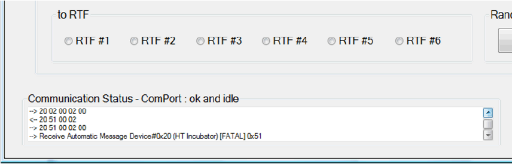
- Beware of the following fatal error message that occurs early in the rotation (≈ 2 seconds after starting):
Random Carousel Rotation Verification
- In Service Software, Initialize the Incubator
- Press Start for Random carousel rotation and allow the rotation to continue for ≈ 5 minutes to ensure that the carousel is electromechanically sound.
Note — Random movements cannot be run simultaneously on more than one Incubator. Select one Incubator at a time. - Beware of the following error messages:
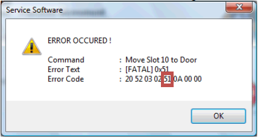
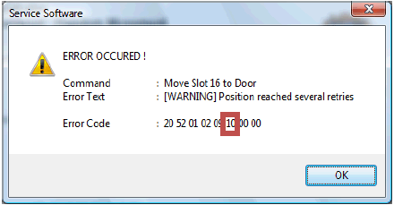
- Error 51 carousel position error is usually caused by a bad pulley or undertensioned belt (repeat Steps 6–11).
- Error 10 carousel position error is caused by a bad carousel/belt engagement, bad pulley, or overtensioned belt (repeat Steps 6–11).
- Repeat Steps 6–12 to resolve any errors.
- Reverse the removal procedure to reassembly the Incubator. Re-install the insulation cover and reseat the Incubator cover.
- Perform a Distributor/Incubator OQ to ensure proper MTU pick/placement. Cycle 3 MTUs.
 button at the top of the page to send feedback, comments, or change requests.
button at the top of the page to send feedback, comments, or change requests.